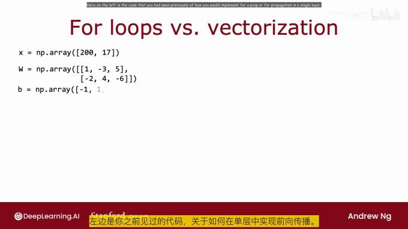

00:02过去十年里，深度学习研究者能够不断扩展神经网络，构建真正的大型神经网络，原因之一就在于神经网络可以被向量化。
00:14它们可以通过矩阵乘法非常高效地实现。
00:19而事实证明，并行计算硬件，包括 GPU，也包括一些 CPU 功能，非常擅长进行超大规模的矩阵乘法。
00:31在这个视频中，我们来看看神经网络的这些向量化实现是如何工作的。
00:37如果没有这些思想，我认为深度学习绝不会有今天这样的成功和规模。
00:43左边是你之前见过的代码，关于如何在单层中实现前向传播。

00:56这里的 X 是输入，w 是比如第一、第二、第三个神经元的权重，参数 b，然后这段代码和你之前看到的一样。
01:09它将输出三个数字，就像这样。
01:13如果你实际运行这个计算，你会得到一、零、一。
01:19事实证明，你可以如下这样开发这个函数的向量化实现。
01:28将 x 设为等于这个。
01:31注意这里有两层方括号。
01:33所以现在它是一个二维数组，就像在 TensorFlow 中一样。
01:38W 和之前一样，而 B，我现在用大写 B，也是一个一乘三的二维数组。
01:50然后，所有这些步骤，里面的这个 for 循环，都可以用几行代码来替代。
02:03matmul 是 numpy 进行矩阵乘法的方式，现在 x 和 w 都是矩阵，你只需把它们相乘即可。
02:14结果这个 for 循环，所有这些代码行，都可以用几行代码替代，从而给出这个函数的向量化实现。
02:26所以你计算 z，现在 z 又是一个矩阵，通过 numpy 点 matmul 在 a_in 和 w 之间进行运算，这里 a_in 和 w 都是矩阵，matmul 是 numpy 执行矩阵与矩阵乘法的方式。
02:36这里 a_in 和 w 都是矩阵，matmul 是 numpy 执行矩阵与矩阵乘法的方式。
02:46它将两个矩阵相乘，然后加上矩阵 B。
02:50然后这里的 A，或叫 A_，等于激活函数 G，也就是 sigmoid 函数，按元素作用于这个矩阵 Z，最后你 s 返回。s。
03:06所以，代码看起来就是这样。
03:09注意，在向量化实现中，所有这些量，x，它被传入作为 a_in 的值，还有 w、b，以及 z 和 a_，所有这些现在都是二维数组。
03:26而这对于神经网络中通过一个全连接层进行一步前向传播来说，被证明是一种非常高效的实现。
03:36因此，这是神经网络中前向传播向量化实现的代码。
03:42但这代码到底在做什么，它实际上是如何工作的呢？
03:48这个 MATMUL 到底在做什么？
03:52在接下来的两个视频中，也都是选修的，我们将讲解矩阵乘法及其工作原理。
04:00如果你熟悉线性代数，如果你熟悉向量、矩阵、转置以及矩阵与矩阵的乘法，你完全可以快速浏览这两个视频，然后跳到本周的最后一个视频。
04:15然后，在本周的最后一个视频中，也同样是选修的，我们将深入更多细节，解释 MATMUL 是如何实现，这种向量化计算的。
04:27那么，接下来让我们进入下一个视频，看看矩阵乘法是什么。